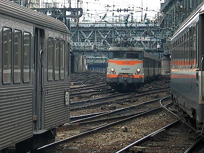
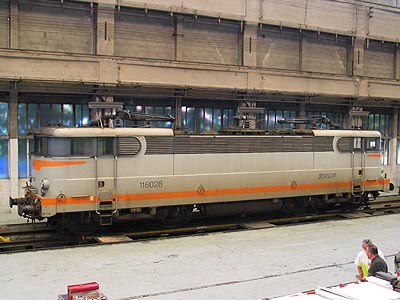

Ferrovia - 11 Février 2008
BB 20005 - BB 25100 - 25150 - 25200
Les pionnières du bicourant
Au début des années 50, les expérimentations de locomotives monophasées sur la ligne Aix-les-Bains - Annecy donnent naissance aux premières locomotives bicourantes de la SNCF : CC 20001, CC 20002 et BBB 20003. Cependant, ces machines sont équipées de systèmes d'alimentation sous 1500 V continu très modestes. Il s'agit simplement de décoller les rames de la gare d'Aix-les-Bains électrifiée par le PLM en courant continu ou d'envoyer les machines seules au dépôt de Chambéry situé à quelques kilomètres.
En 1955, l'électrification purement 25 kV 50 Hz de l'artère Nord-Est est un succès. L'électrification de la partie Sud de l'artère Impériale (Lyon à Marseille), qui s'étale de 1957 à 1962 fait pourtant appel au 1500 V continu. La technologie 25 kV est encore jeune et les dirigeants de la SNCF peut être prudents pour l'équipement d'un axe si capital. Mais surtout, La section Nord, de Paris à Lyon, est déjà électrifiée en continu depuis 1952, ainsi que les voies bis jusque Chasse sur Rhône depuis 1954. Les relais de machines à Lyon seraient pénalisants et nécessiteraient des voies commutables. C'est cette dernière option qui est choisie pour la gare de Dôle lors de l'électrification de Dôle-Frasne-Vallorbe/Pontarlier en 1958. D'une part, le noeud de Dôle est bien moins complexe que celui de Lyon et, d'autre part, le profil difficile de la ligne transfrontalière justifie l'emploi du monophasé.
Les qualités du 25 kV incitent à sa généralisation sur tous les nouveaux chantiers d'électrification mais son emploi va multiplier les frontières électriques. Le besoin d'une machine parfaitement bicourante et apte aux mêmes services sous les deux systèmes se fait de plus en plus pressant. Le problème principal à résoudre est celui du poids. La meilleure solution sous 25 kV à cet instant est la locomotive à graduateur haute tension, redresseurs ignitrons à vapeur de mercure et moteurs continus série ; appliquée sur les BB 12000, BB 16000 et BB 16500. Mais le transformateur et le système de réfrigération des ignitrons sont lourds et encombrants. Le salut vient des premières diodes silicium de puissance qui remplacent les ignitrons. Elles sont déjà utilisées sur les machines bifréquences BB 20103 et 20104. Le gain de poids permet alors d'installer un rhéostat et de démarrer la locomotive sous courant continu.
Le 3 septembre 1959, la BB 16028, flambant neuve (elle fut exposée devant le CNIT avant d'entrer en service au mois d'Août), part en dérive dans le dépôt de Thionville et heurte violemment un butoir. Gravement avariée, elle est reconstruite en 1961 sous le numéro BB 20005 et intègre le club fermé des prototypes Monophasés. Un court moment équipée avec des ignitrons, la BB 20005 reçoit des diodes et fait l'objet d'essais bicourants sur Paris-Dijon et Dôle-Frasne. Les résultats sont concluants et la SNCF passe commande des BB 25100 et BB 25200. Avec une caisse identique à quelques détails près aux BB 9200 et BB 16000, ces deux séries de machines se différencient au niveau de leur bogies. Le rapport de réduction des BB 25100 les limitent à 130 km/h et les destine au transport de marchandises et messageries. Tandis que les BB 25200 sont limitées à 160 km/h et vont tirer les Rapides et Express.
La courte série des 25 BB 25100 sera suivie par la série des BB 25150 se différenciant par plusieurs améliorations.
Quant à la BB 20005, après une carrière menée à la région Ouest, elle fut remise au type 16000 en 1975. Sous le numéro 16028, elle sillonnait la Normandie jusqu'à son amortissement en 2008 avec 7 millions de kilomètres au compteur, soit 2 à 3 de moins que ses consœurs.
Pour plus d'info :
la BB 20005 sur RailSavoie
la BB 16028 après son violent tamponnement, peu avant sa transformation en BB 20005 sur le site de Bernard Parent

La BB 16028 à St Lazare. Elle fut la BB 20005 de 1961 à 1975 (27/12/2003)

La BB 16028 en révision dans l'EIMM d'Oullins (15/05/2004)